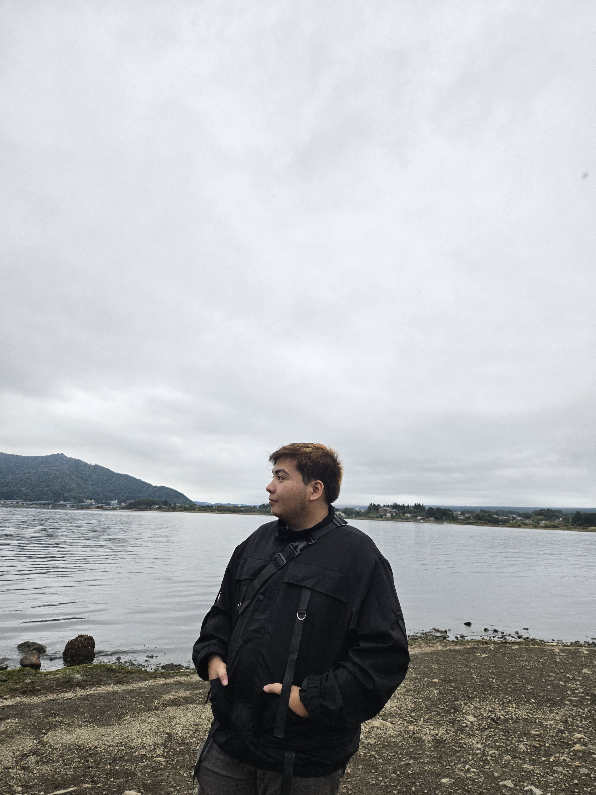

AI Chatbot & Agent Workflows
Built chatbot prototypes using structured prompting and iterative testing. Designed agent-based workflows to automate reporting, data processing, and multi-step task execution.
Mechanical engineer working across AI, automation, and physical systems.
Lucena City, Philippines
I'm a Mechanical Engineering graduate from Manuel S. Enverga University Foundation, currently freelancing as a workflow automation specialist — and, before that, an AI researcher and developer for a range of client projects.
My work tends to live at the seam between things: between hardware and software, between research notes and shippable systems, between a messy process and a clean automated one. I like the seams. That's where most of the interesting problems sit.
When I'm not on a client project, you'll usually find me building drones, testing AI agent workflows, or refining a CRM pipeline until it just feels right.

CRM and work-management automations on Monday.com and ContactPoint — pipelines, statuses, automation rules, and the unglamorous data structures that hold it all together.
Building chatbot prototypes and AI agent workflows, model evaluation, prompt structuring, and clear technical reporting. Python is home base; C++ when I need to get closer to the hardware.
Machine design, HVAC fundamentals, preventive maintenance, and basic diagnostics. Trained on industry shop floors and in academic labs — comfortable around real hardware.
Built chatbot prototypes using structured prompting and iterative testing. Designed agent-based workflows to automate reporting, data processing, and multi-step task execution.
Undergraduate thesis. Rail-guided, Arduino-controlled irrigation for vegetable crops. Applied fluid mechanics and machine design; ran before/after field comparisons.
Assembled a multirotor drone from scratch. Supported hardware integration, flight-readiness testing, and embedded-device setup for video and audio-based drone detection.
Calculator and cashier-system builds during academic training. Core programming concepts, structured problem-solving, and debugging across Java, C++, and Python.
HVAC fundamentals, machine design, preventive maintenance, mechanical diagnostics, power-plant & industrial systems
Python, basic C++, AI model testing & evaluation, chatbot prototyping, agent workflow design, prompt structuring
Monday.com, ContactPoint, CRM automation rules, status pipelines, data management, reporting
BOSH training, Safety Officer 2, occupational health & safety practices